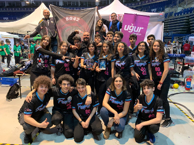
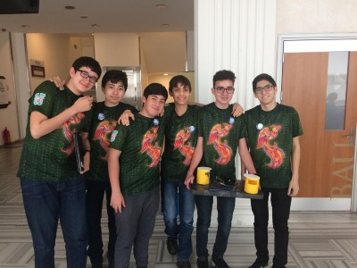

About Me
Hello, I am Gorkem Cem Guven, a generation Z born in 2003. I live in Antalya/Turkey. I am studying at Ugur Okullari Calli Anatolian High School.
A generation Z born into the digital world.
Hello, I am Gorkem Cem Guven, a generation Z born in 2003. I live in Antalya/Turkey. I am studying at Ugur Okullari Calli Anatolian High School.
I entered my high school in 2018 with a scholarship. I'm graduating high school in 2022.
At the MagaraJam event, we were asked to make a computer game within 72 hours. The issue given to us in this GameJamde was System Error. We started to think as a team. As a result, we created a professor working on the time machine project, and while that professor was going to the future because of a code error, we set the subject to go to the past. As a result of this GameJam, we placed 104th out of 698 teams.. You can check my game here:
I am actively working on the 8042 fenrir team, of which I am a member, this year. I was continuing. The theme of the tournament due to the pandemic has changed and has started an online process. entry. Since the process is online, the digital world has come to the fore. Therefore We were asked to design a game in accordance with the determined theme. While designing the game I worked with a team, not alone. My position in the team rules determined was to create the animation of the game. While creating this animation, Blender named I used the application. You can watch the animation Here:
On my adventure in the world's most prestigious robot tournament, FRC (First Robotic League) It started with joining the 8042 Fenrir team, of which I was a member. Here my department was on software and my position was software captain. We do every part of the robot related to the software depended on me. Move the robot, The programming language I used to do the tasks was Java.
Students who want to go home after classes that last until late they didn't feel safe waiting for public transport, but in the police so he couldn't be bothered. A solution had to be found at this time I noticed that there are guards for security. And my peers waiting at the bus stop when they don't feel safe by developing an app so that they are not alone He was sending a signal to the guard, making the closest team come to them. In this application, I developed an interface using C#.
Garbage formed as the end of the consumption frenzy has become a problem of the world. I wanted to find a solution to this problem. An artificial intelligence-based trash can I developed. My aim is to draw attention to recycling and to be able to control it was to design a mechanism for In this system, C#, arduino and I used a 3D printer for prototype . From arduino to identify and parse garbage I took advantage. I developed it in C# in the decision mechanism.
Friend to the astronaut in space. Sent alone into space for mission I designed artificial intelligence as a digital friend for astronauts. In this project, I designed a a brain using C# programming language. Evaluating all the psychological situations in which the astronaut will not be alone I created artificial intelligence by setting boundaries. Thus, the astronaut He has made a digital friend.

